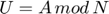

Contents
Algoritmo Chino de los Restos

Algoritmo Chino de los Restos version 1
Algoritmo Chino de los Restos version 2
path(path, 'Algorithms'); path(path, 'Classes'); clear
n = {9; 10; 11};
a = {5; 1; 4};
Z = Integers;
for j = 1:size(n,1)
fprintf("u = %i mod %i\n", a{j},n{j});
end
u = chinese_rem(n,a,Z); %-1129
fprintf("\nu = %i\n", u);
u = chinese_rem2(n,a,Z); %851
fprintf("\nu = %i\n", u);
u = 5 mod 9 u = 1 mod 10 u = 4 mod 11 u = -1129 u = 851
n = {7+2i; 7};
a = {5+i; 3};
Zi = GaussIntegers;
for j = 1:size(n,1)
fprintf("u = %i%+ii mod %i%+ii\n", real(a{j}), imag(a{j}), ...
real(n{j}), imag(n{j}));
end
u = chinese_rem(n,a,Zi); %-25
fprintf("\nu = %i%+ii\n", real(u),imag(u));
u = chinese_rem2(n,a,Zi);
fprintf("\nu = %i%+ii\n", real(u),imag(u));
u = 5+1i mod 7+2i u = 3+0i mod 7+0i u = -25+0i u = -25+0i
p = 3;
n = 1;
fqx = FiniteFieldPoly(p,n);
n = {[1 1 0];[-Inf 1 1]};
a = {[-Inf 1];[0 1]};
for j = 1:size(n,1)
fprintf("u = (%s) mod (%s)\n", fqx.gfshow(fqx,a{j}), fqx.gfshow(fqx,n{j}));
end
u = chinese_rem(n,a,fqx); % 1 + 2x + x^2 + x^3
fprintf("u(x) = %s\n", fqx.gfshow(fqx,u));
u = chinese_rem2(n,a,fqx);
fprintf("u(x) = %s\n", fqx.gfshow(fqx,u));
u = (0 + 2x) mod (2 + 2x + 1x^2) u = (1 + 2x) mod (0 + 2x + 2x^2) u(x) = 1 + 2x + 1x^2 + 1x^3 u(x) = 1 + 2x + 1x^2 + 1x^3
p = 3;
n = 2;
fqx = FiniteFieldPoly(p,n);
n = {[1 3];[-Inf 0]};
a = {[3];[5]};
for j = 1:size(n,1)
fprintf("u = (%s) mod (%s)\n", fqx.gfshow(fqx,a{j}), fqx.gfshow(fqx,n{j}));
end
u = chinese_rem(n,a,fqx); % 2a + (1+2a)x
fprintf("u(x) = %s\n", fqx.gfshow(fqx,u));
u = chinese_rem2(n,a,fqx);
fprintf("u(x) = %s\n", fqx.gfshow(fqx,u));
u = ((2 + 2a)) mod ((0 + 1a) + (2 + 2a)x) u = ((0 + 2a)) mod ((0 + 0a) + (1 + 0a)x) u(x) = (0 + 2a) + (1 + 2a)x u(x) = (0 + 2a) + (1 + 2a)x